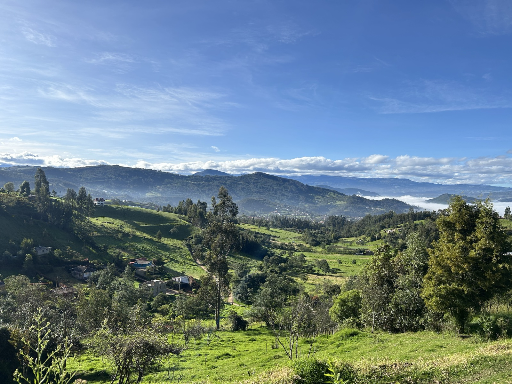
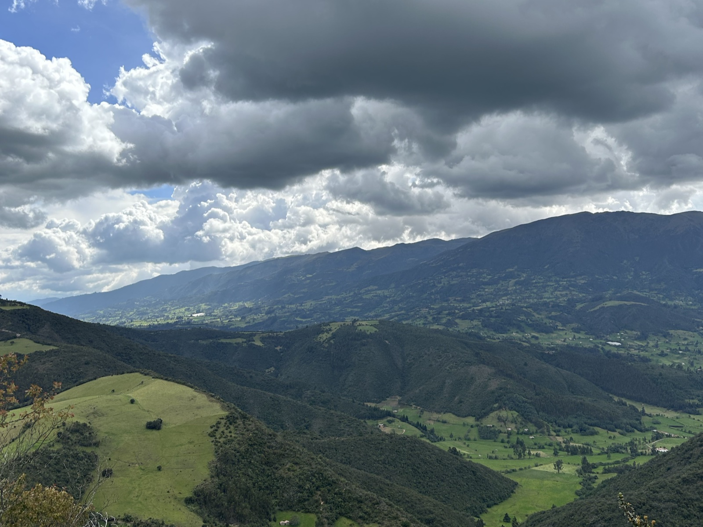
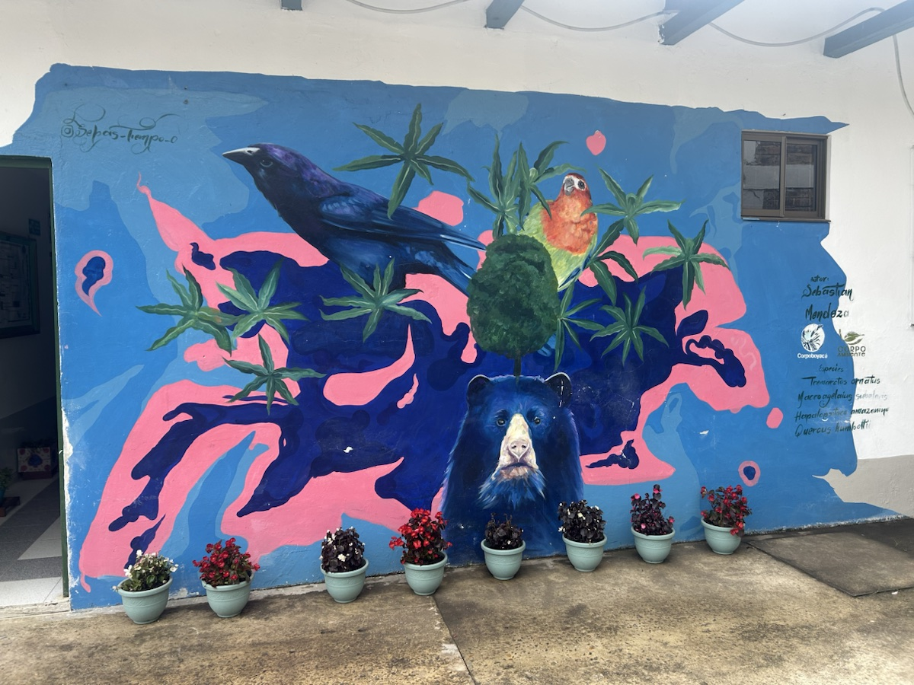
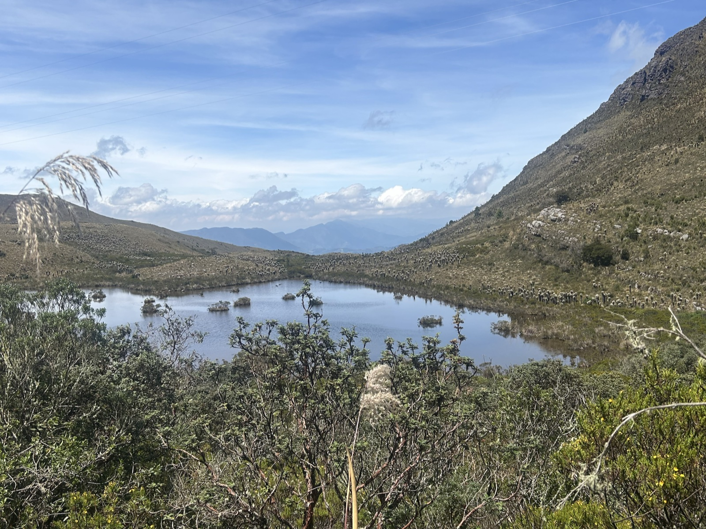
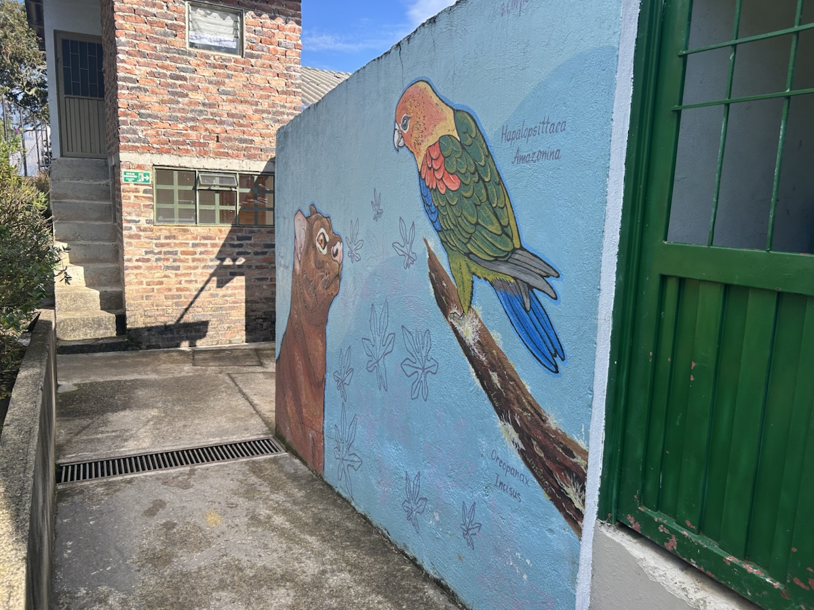
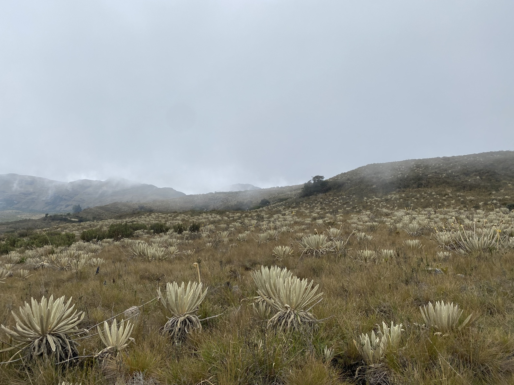
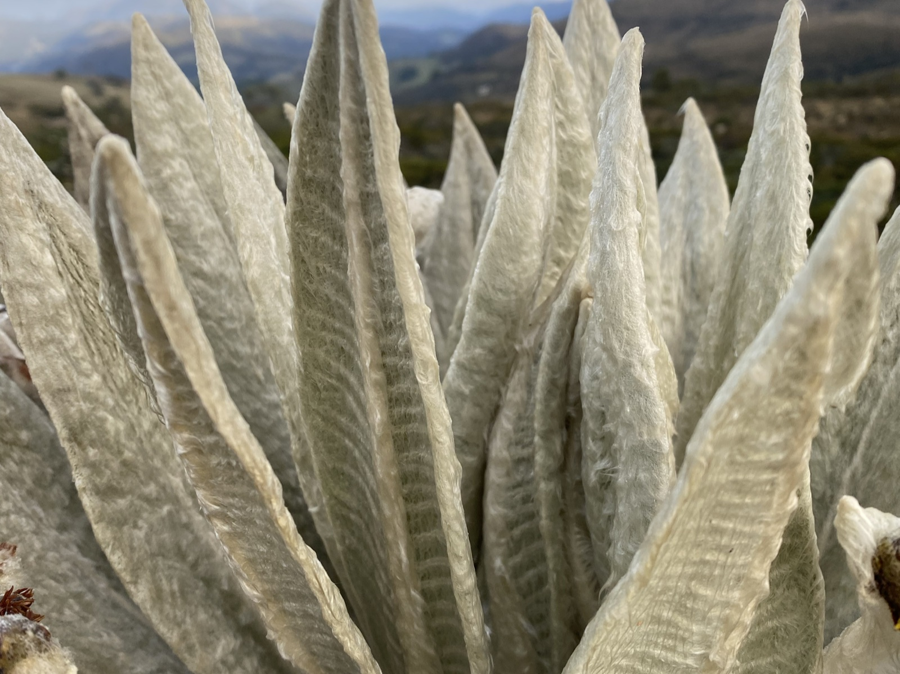
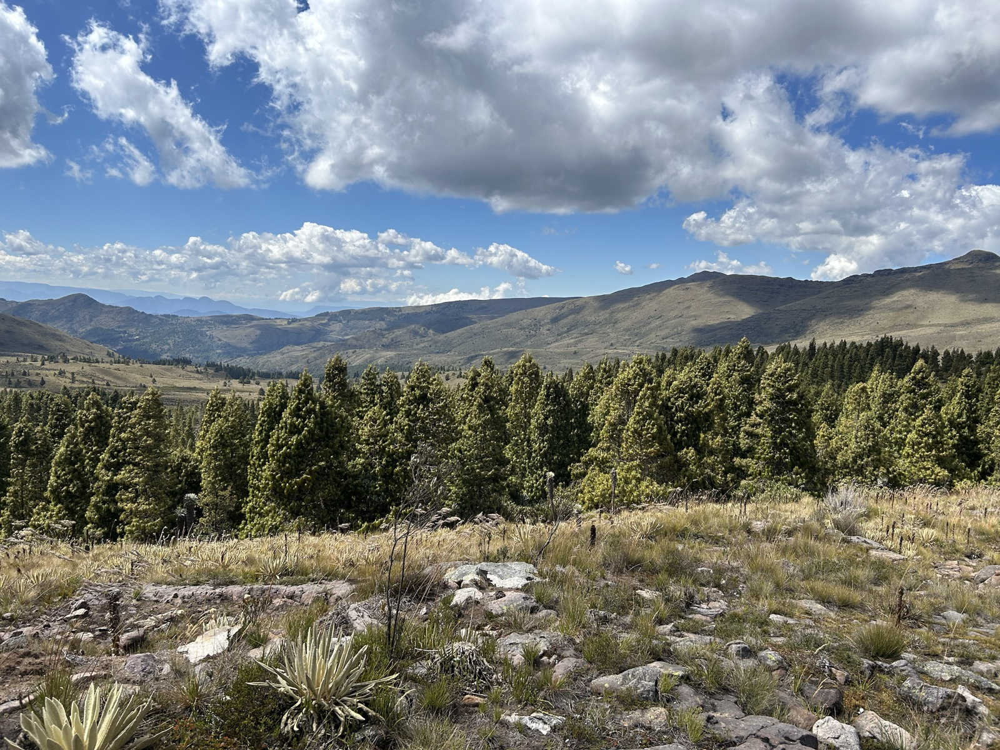
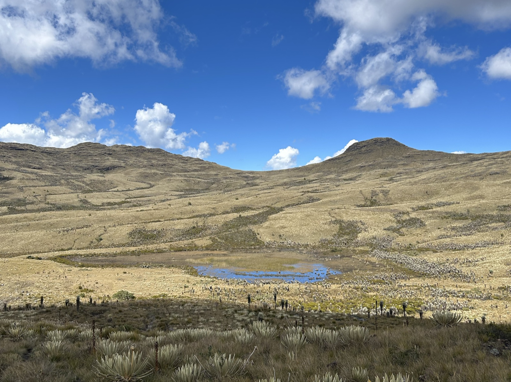

Proyecto
Usa flechas izquierda y derecha para mover entre diapositivas.
Proyecto
¿Qué lograríamos si, en lugar de replicar mercados culturales urbanos, nos enfocamos en formar sujetos creadores en el campo?
Vereda El Carmen · Duitama, Boyacá · Propuesta de Andrés Felipe Becerra Pedraza

Justificación
Aunque la cultura es un derecho fundamental, en la práctica rural suele reducirse a eventos aislados sin continuidad.
Giro propuesto: pasar de una visión mercantil a la formación de sujetos creadores.

Problema
En la vereda El Carmen la cultura no se habita como práctica viva. Eso limita la expresión juvenil y la producción simbólica local.
El reto es pasar de la predestinación productiva a la creación cotidiana con sentido propio.

Propuesta y Objetivos
El objetivo principal es fortalecer capacidades creativas en estudiantes de la I.E.A. Francisco Medrano mediante diseño participativo.
Meta: que el joven rural pase de espectador de su tradición a autor de su territorio.

Marco de Referencia
El proyecto se alinea con el Modelo Integrado de Planeación y Gestión para convertir la gestión cultural en valor público con resultados sociales tangibles.
No es una iniciativa suelta: es un proceso institucional para permanecer en el tiempo.

Metodología
El diseño se asume como semilla: no impone soluciones, co-crea con la comunidad en cinco etapas adaptadas al contexto rural.
Diseñar con la comunidad, no para la comunidad.

Ejes de creación artística
El laboratorio se materializa en prácticas artísticas que nacen del territorio y de los recursos disponibles en la comunidad.
Interdisciplinariedad con autoría local y memoria viva.

Impacto y Diferencial
Se esperan resultados artísticos, pero sobre todo un cambio en la forma en que estudiantes y comunidad perciben y narran su entorno.
La vereda deja de ser solo territorio productivo para asumirse como territorio narrado.

Referencias
Marco bibliográfico y de política pública que sustenta la propuesta de Territorio Creador.
Formato de cita académica para soporte conceptual e institucional.
